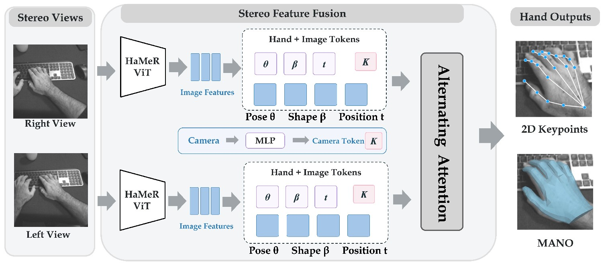

StereoHOI: Recover Metric Hand-Object Interaction from Egocentric Stereo Vision
Abstract
Recovers metric-scale 3D hand-object interaction from egocentric stereo images: fuses frozen hand-foundation-model priors with camera parameters, models stereo disparity via alternating cross-view attention, and predicts metric wrist translation and pose residuals, placing hand and object meshes in one metric frame.